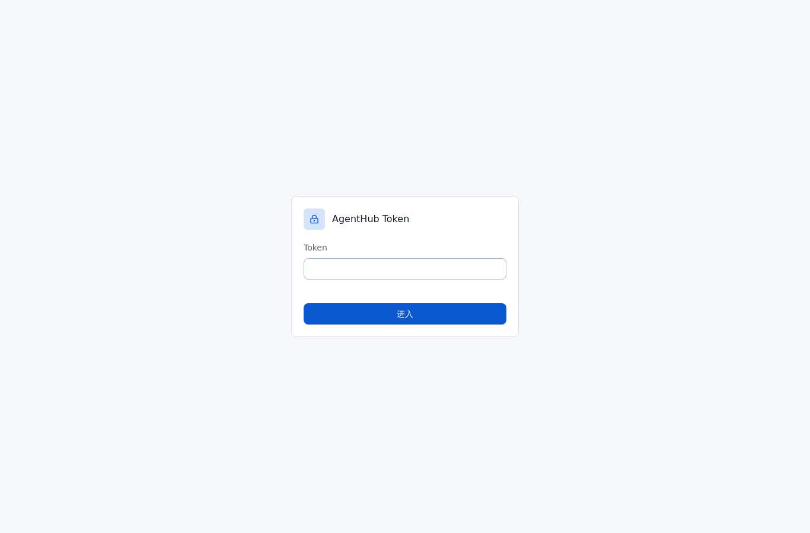
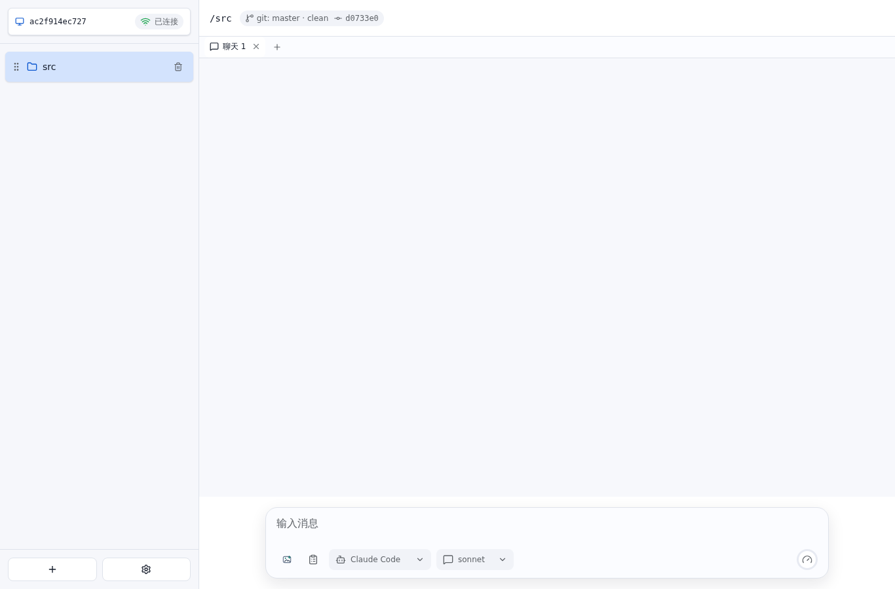

Token 鉴权 E2E 测试报告
• 结果: 通过
• 日志: test.log
• 服务日志: server.log
过程
• AGENTHUB_TOKEN 非空时，前端先展示 token 输入界面，不连接工作台。

• 输入错误 token 时，前端保持在 token 输入界面，且不会持久化错误 token。
• 输入正确 token 后，前端连接 WebSocket 并只把 AGENTHUB_TOKEN 写入持久化状态。

• 刷新页面后，前端复用已储存的 AGENTHUB_TOKEN，不再储存其它状态。